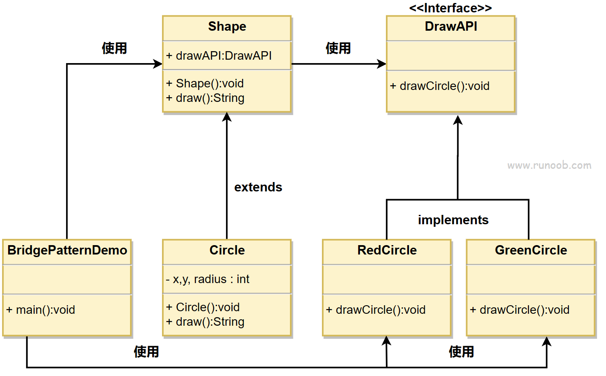

设计模式小记6 Bridge
设计模式小记 6
Bridge模式
我们常常用来处理那些一个抽象存在多个实现的方式。也就是说，我们的一个类在不同的环境下达到相同的效果需要采用不同的实现，这个时候，我们就需要采用Bridge方式来分离接口和实现。
桥接（Bridge）是用于把抽象化与实现化解耦，使得二者可以独立变化。这种类型的设计模式属于结构型模式，它通过提供抽象化和实现化之间的桥接结构，来实现二者的解耦。
这种模式涉及到一个作为桥接的接口，使得实体类的功能独立于接口实现类，这两种类型的类可被结构化改变而互不影响。
桥接模式的目的是将抽象与实现分离，使它们可以独立地变化，该模式通过将一个对象的抽象部分与它的实现部分分离，使它们可以独立地改变。它通过组合的方式，而不是继承的方式，将抽象和实现的部分连接起来。
我们通过下面的实例来演示桥接模式（Bridge Pattern）的用法。其中，可以使用相同的抽象类方法但是不同的桥接实现类，来画出不同颜色的圆。
介绍
意图：将抽象部分与实现部分分离，使它们都可以独立的变化。
主要解决：在有多种可能会变化的情况下，用继承会造成类爆炸问题，扩展起来不灵活。
何时使用：实现系统可能有多个角度分类，每一种角度都可能变化。
如何解决：把这种多角度分类分离出来，让它们独立变化，减少它们之间耦合。
关键代码：抽象类依赖实现类。
应用实例： 1、猪八戒从天蓬元帅转世投胎到猪，转世投胎的机制将尘世划分为两个等级，即：灵魂和肉体，前者相当于抽象化，后者相当于实现化。生灵通过功能的委派，调用肉体对象的功能，使得生灵可以动态地选择。 2、墙上的开关，可以看到的开关是抽象的，不用管里面具体怎么实现的。
优点： 1、抽象和实现的分离。 2、优秀的扩展能力。 3、实现细节对客户透明。
缺点：桥接模式的引入会增加系统的理解与设计难度，由于聚合关联关系建立在抽象层，要求开发者针对抽象进行设计与编程。
使用场景： 1、如果一个系统需要在构件的抽象化角色和具体化角色之间增加更多的灵活性，避免在两个层次之间建立静态的继承联系，通过桥接模式可以使它们在抽象层建立一个关联关系。 2、对于那些不希望使用继承或因为多层次继承导致系统类的个数急剧增加的系统，桥接模式尤为适用。 3、一个类存在两个独立变化的维度，且这两个维度都需要进行扩展。
注意事项：对于两个独立变化的维度，使用桥接模式再适合不过了。
以下是桥接模式的几个关键角色：
- 抽象（Abstraction）：定义抽象接口，通常包含对实现接口的引用。
- 扩展抽象（Refined Abstraction）：对抽象的扩展，可以是抽象类的子类或具体实现类。
- 实现（Implementor）：定义实现接口，提供基本操作的接口。
- 具体实现（Concrete Implementor）：实现实现接口的具体类。
实现（java）
我们有一个作为桥接实现的 DrawAPI 接口和实现了 DrawAPI 接口的实体类 RedCircle、GreenCircle。Shape 是一个抽象类，将使用 DrawAPI 的对象。BridgePatternDemo 类使用 Shape 类来画出不同颜色的圆。

步骤 1
创建桥接实现接口。
DrawAPI.java
public interface DrawAPI {
public void drawCircle(int radius, int x, int y);
}步骤 2
创建实现了 DrawAPI 接口的实体桥接实现类。
RedCircle.java
public class RedCircle implements DrawAPI {
@Override
public void drawCircle(int radius, int x, int y) {
System.out.println("Drawing Circle[ color: red, radius: "
+ radius +", x: " +x+", "+ y +"]");
}
}GreenCircle.java
public class GreenCircle implements DrawAPI {
@Override
public void drawCircle(int radius, int x, int y) {
System.out.println("Drawing Circle[ color: green, radius: "
+ radius +", x: " +x+", "+ y +"]");
}
}步骤 3
使用 DrawAPI 接口创建抽象类 Shape。
Shape.java
public abstract class Shape {
protected DrawAPI drawAPI;
protected Shape(DrawAPI drawAPI){
this.drawAPI = drawAPI;
}
public abstract void draw();
}步骤 4
创建实现了 Shape 抽象类的实体类。
Circle.java
public class Circle extends Shape {
private int x, y, radius;
public Circle(int x, int y, int radius, DrawAPI drawAPI) {
super(drawAPI);
this.x = x;
this.y = y;
this.radius = radius;
}
public void draw() {
drawAPI.drawCircle(radius,x,y);
}
}步骤 5
使用 Shape 和 DrawAPI 类画出不同颜色的圆。
BridgePatternDemo.java
public class BridgePatternDemo {
public static void main(String[] args) {
Shape redCircle = new Circle(100,100, 10, new RedCircle());
Shape greenCircle = new Circle(100,100, 10, new GreenCircle());
redCircle.draw();
greenCircle.draw();
}
}步骤 6
执行程序，输出结果：
Drawing Circle[ color: red, radius: 10, x: 100, 100]
Drawing Circle[ color: green, radius: 10, x: 100, 100]实现(C++)
这种方式天然具有抽象和实现的分离特性，即可以允许我们更好的关注抽象，在调试的时候更容易得知模块出现的问题在何处。
ImplProduct.h: 实现内核
#include <iostream>
#define MSG(X) std::cout << X << std::endl
enum class SELECTION_CHOICE{
A_FIT,
B_FIT
};
static const SELECTION_CHOICE this_choice = SELECTION_CHOICE::B_FIT;
class AbsPro
{
public:
virtual void process() = 0;
};
class ProA : public AbsPro
{
public:
void process() override{
MSG("Process in A implements");
}
};
class ProB : public AbsPro
{
public:
void process() override
{
MSG("Process in B implements");
}
};
class ImplProduct
{
public:
ImplProduct(){
if(this_choice == SELECTION_CHOICE::A_FIT)
pro = new ProA;
else
pro = new ProB;
}
virtual void process(){
pro->process();
};
private:
AbsPro* pro;
};分离MyProduct的具象实现和抽象接口
MyProduct.h
#ifndef UNTITLED5_MYPRODUCT_H
#define UNTITLED5_MYPRODUCT_H
class ImplProduct;
class MyProduct
{
public:
MyProduct();
void process();
private:
ImplProduct* product;
};
#endif //UNTITLED5_MYPRODUCT_HMyProduct.cpp
#include "MyProduct.h"
#include "ImplProducts.h"
MyProduct::MyProduct()
{
this->product = new ImplProduct;
}
void MyProduct::process(){
this->product->process();
} 现在我们就做好了抽象。
#include "MyProduct.h"
int main()
{
MyProduct a;
a.process();
} 只需要更改
static const SELECTION_CHOICE this_choice = SELECTION_CHOICE::B_FIT; 就可以灵活的切换实现。即使表现上完全一致。